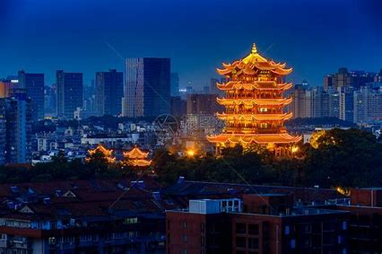
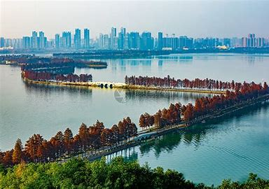
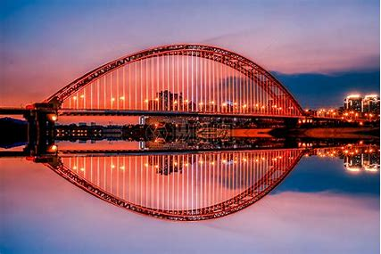

武汉的风景 返回主页
1.黄鹤楼

位于湖北省武汉市武昌区，地处蛇山之巅，濒临万里长江，为武汉市地标建筑；
始建于三国吴黄武二年（223年），历代屡加重修，现存建筑以清代“同治楼”为原型设计，重建于1985年；因唐代诗人崔颢登楼所题《黄鹤楼》一诗而名扬四海。
自古有“天下绝景”之美誉，与晴川阁、古琴台并称为“武汉三大名胜”，与湖南岳阳岳阳楼、江西南昌滕王阁并称为“江南三大名楼”，
是“武汉十大景”之首、“中国古代四大名楼”之一、“中国十大历史文化名楼”之一，世称"天下江山第一楼"。
黄鹤楼主楼为四边套八边形体、钢筋混凝土框架仿木结构，通高51.4米，底层边宽30米，顶层边宽18米，飞檐五层，攒尖楼顶，顶覆金色琉璃瓦，由72根圆柱支撑，楼上有60个翘角向外伸展；楼外有铸铜黄鹤造型、胜像宝塔、牌坊、轩廊、亭阁等建筑环绕，整楼形如黄鹤，展翅欲飞，檐下四面悬挂匾额，正面悬书法家舒同题“黄鹤楼”三字金匾。
2.东湖绿道

作为东湖风景区生态保护和系统修复的核心工程，东湖绿道在规划设计上，将生态修复作为重点考量，
不仅让市民实现“世界级慢生活”，也规划了13条生物通道，保护上百种野生脊椎动物栖息地。
东湖水域面积达32.4平方公里。东湖绿道范围内共生存着包括鱼类、两栖类、爬行类、鸟类在内的上百种野生脊椎动物，东湖湿地是冬候鸟由北方迁至南方的重要栖息地。
东湖绿道规划设计中，注重对生物多样性的保护，规划了13条生物通道，如为小野兔、小松鼠等小型动物设计可以穿行的管状涵洞和箱形涵洞，管涵设低水路和步道。
3.晴川桥

武汉晴川大桥位于汉江与长江的交汇处，连接汉口的中山大道和汉阳铁门关，主桥为下承式钢管无铰拱桥，
工程全长2147.5米,净跨280米,是目前同类型桥梁中跨度最长、技术含量较高的城市景观桥梁。
大桥栏杆的拱型与大桥曲线一致，同时桥上装饰有反映荆楚文化的图案，世界名桥铺装的人行道、和拱桥的彩虹系列浮雕壁画、观景平台等等，使其成为了一道亮丽的风景线。
因红色拱桥如一道彩虹,故又成称为“彩虹桥”，晴川桥与著名的龙王庙景观区、对岸的龟山及山下被国内外人士誉为“中国角”的汉阳南岸嘴，形成武汉最抢眼的新兴旅游景观。